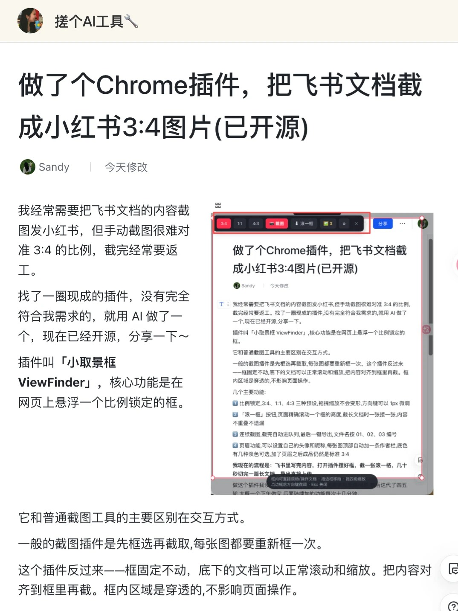
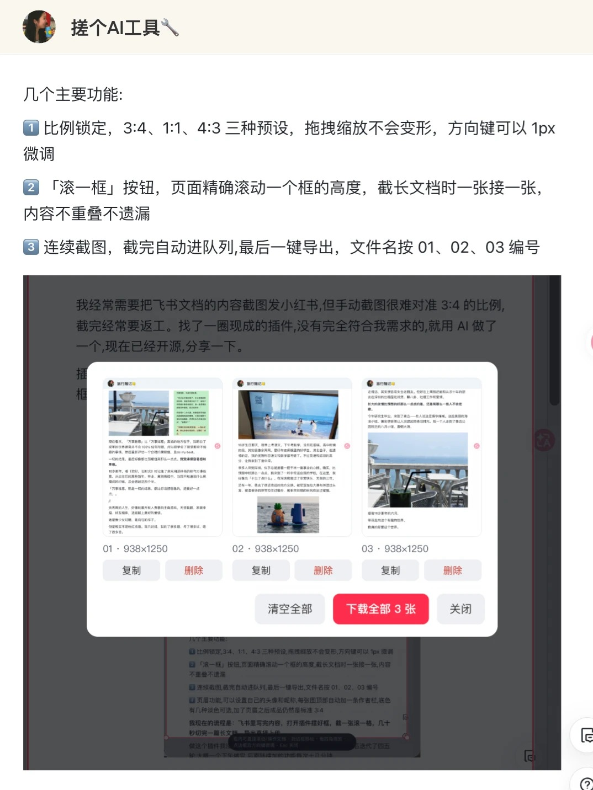
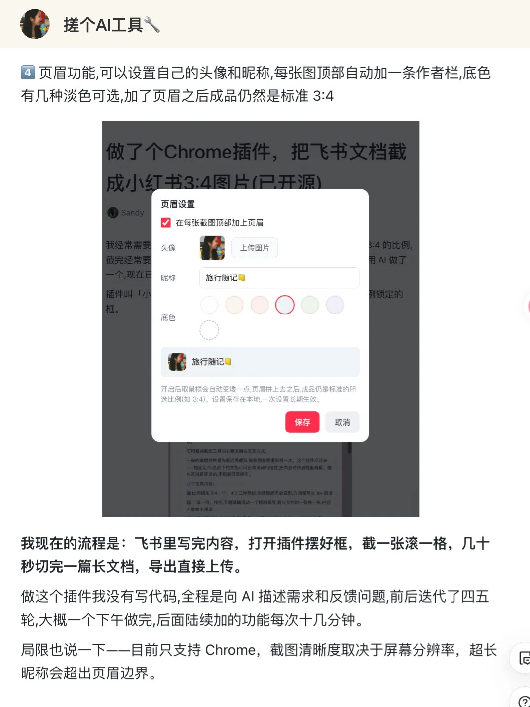

飞书文档截成小红书 3:4 图片，手动框选永远差一点。
这是一个「框不动、内容动」的截图工具，从一个下午的烦躁开始，到现在开源。
我经常需要把飞书文档里写好的内容截图发小红书。小红书图文是标准的 3:4 竖版比例，手动截图，靠肉眼对齐，比例永远差一点——截完发去看，不是宽了就是窄了，回来重截。每一篇笔记都要重新经历一遍这个过程。
锁比例的截图插件市面上确实有，但底层逻辑都是一样的：先定住页面，再拖框圈范围。长文档要切七八张图，每一张都要重新框一次位置，越截越乱，效率没有真正提上去。
先截图/定住页面，再拖框选取范围。每切一张新内容，框要重新拖一次位置和大小。长文档切图，操作量随张数线性增加。
框固定当取景器，比例锁死不变。底下的文档正常滚动、缩放，把内容对齐进框里再截——框只挪一次，剩下的交给滚动。
整个插件我没有手写代码，只是不断把「哪里不顺」讲清楚：先跑起来，再用真实场景试，最后把小摩擦一轮轮补掉。
一个框里放三张实际截图：固定取景、连续导出、页眉设置。横向滑动就能看完整流程。

固定 3:4 取景框，底下文档继续滚动和缩放。

连续截图自动入队，最后统一下载导出。

页眉设置头像、昵称和底色，成品仍保持标准比例。
做完之后，我其实也很好奇：这个系统到底有没有人做过？倒不是说查完会更开心，而是会担心自己是不是在重复造轮子。后来认真看了一圈，确实有一些思路接近的工具，但幸运的是，我做出了一个更符合自己工作需求的小插件。它没有解决所有人的所有问题，但很准确地解决了我的问题，所以还是挺有成就感、挺幸福的。
把所有截图拼接成一张完整的长图，解决的是「长截图」问题。输出永远是一张图。
把内容切成 N 张独立的、比例锁死、编号好的卡片，解决的是「发图文」问题。同一个动作，相反的目的。
3:4 / 1:1 / 4:3 三种预设，拖拽缩放不变形，方向键 1px 精确微调。
「滚一框」精确滚动一个框高，连续截图自动入队，一键导出自动编号。
自定义头像、昵称、淡雅底色，成品自动倒推比例，页眉之外仍是标准 3:4。
GitHub 搜 ChenSixing123/xiao-qujingkuang · README 里有完整安装步骤，无需写代码